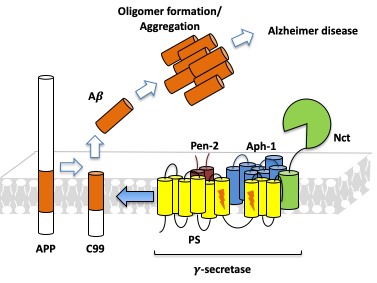

Project 1: AD Drug Discovery Targeting Aβ Precursor Protein (APP) Processing
γ-Secretase cleavage of amyloid precursor protein (APP) at the transmembrane domain (TM) is the latest step resulting in the formation of Aβ protein, which is a molecule that can aggregate into fibril and plaques in the brain, a pathological hallmark of Alzheimer’s disease (AD). To now, all clinical trials of γ-secretase inhibitors have failed due to off-target effects since γ-secretase has more than one substrate. As a novel strategy, we are carrying out drug discovery targeting Aβ precursor protein transmembrane domain (APPTM), seeking for high-specific drugs which can stop Aβ processing without interfere with other important γ-Secretase involved pathways like Notch signaling.
AD drug discovery targeting Aβ precursor protein (APP) processing
Project 2: The Transmission of Tau Protein and Related Tau-glycans Interactions
Microtubule associated protein tau is an intrinsically disordered protein (IDP) and aggregates to form neurofibrillary tangles (NFT) within neurons, a pathological hallmark of AD. Recent work has shown that heparan sulfate proteoglycan (HSPG) on neuronal surface binds tau aggregates or misfolded tau monomers, facilitating tau uptake and intracellular seeding of aggregation. The structural basis of tau-glycans interactions will reveal many unanswered questions about tau pathology and implicate new strategy for AD drug discovery.

The transmission of tau protein and related tau-glycans interactions
Past Projects

A Single Aspartate Coordinates Two Catalytic Steps in Hedgehog Autoprocessing.
Jian Xie, Timothy Owen, Ke Xia, Brian Callahan and Chunyu Wang (2016).
Journal of the American Chemical Society. 138: 10806-10809. DOI: 10.1021/jacs.6b06928.
Read MoreStructural basis of a stabilizing mutation in Mtu RecA intein revealed by high pressure NMR.
Allison Zwarycz, Martin Fossat, Otar Akanyeti, Zhongqian Lin, Catherine Royer, Kenneth Mills and Chunyu Wang (2017).
Biochemistry 56(21):2715-2722. DOI: 10.1021/acs.biochem.6b01264.
Read More
Glycan Determinants of Heparin-Tau Interaction.
Jackie Zhao, Isabelle Huvent, Guy Lippens, David Eliezer, Anqiang Zhang, Quanhong Li, Peter Tessier, Robert J Linhardt, Fuming Zhang, and Chunyu Wang (2017).
Biophysical Journal. 112(5): 921-932.
Read More
Zinc Inhibits Hedgehog Autoprocessing: Linking Zinc Deficiency with Hedgehog Activation.
Jian Xie, Timothy Owen, Ke Xia, Ajay Vikram Singh, Emily Tou, Lingyun Li, Brigitte Arduini, Hongmin Li, Leo Q. Wan, Brian Callahan and Chunyu Wang (2015).
J. Biol. Chem. 289(118): 11591-11600. Top 5 most viewed article March-April 2015 on JBC website.
Read More
Familial Alzheimer's Mutations within APPTM Increase Abeta42 Production by Enhancing the Accesibility of the Epsilon-Cleavage Site
Wen Chen, Eric Gamache, David Rosenman, Jian Xie, Maria Lopez, Yueming Li, and Chunyu Wang (2014).
Nature Communications 4:3037. DOI: 10.1038/ncomms4037.
Read More
Zinc Inhibits Hedgehog Autoprocessing: Linking Zinc Deficiency with Hedgehog Activation.
Jian Xie, Timothy Owen, Ke Xia, Ajay Vikram Singh, Emily Tou, Lingyun Li, Brigitte Arduini, Hongmin Li, Leo Q. Wan, Brian Callahan and Chunyu Wang (2015).
J. Biol. Chem. 289(118): 11591-11600. Top 5 most viewed article March-April 2015 on JBC website.
Read More